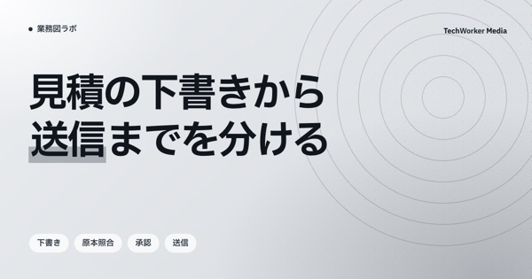
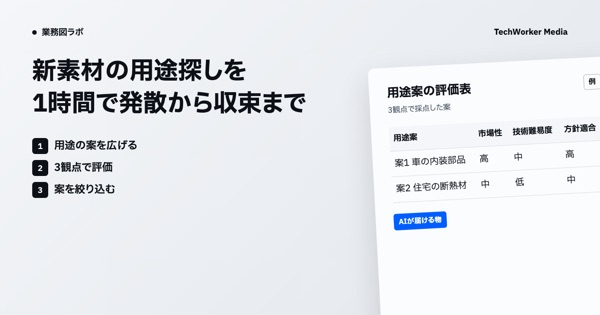
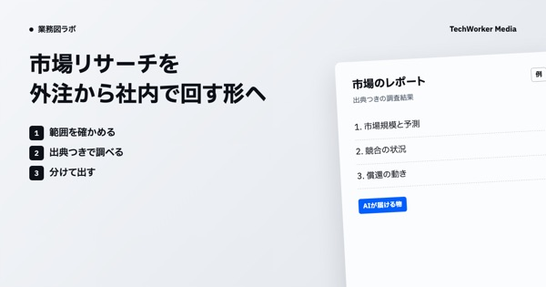
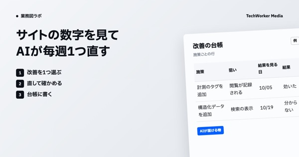
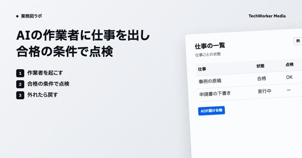
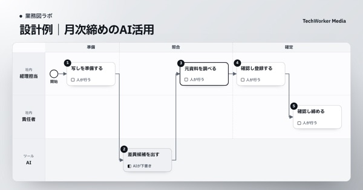
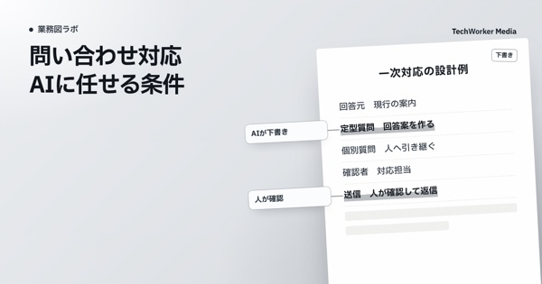
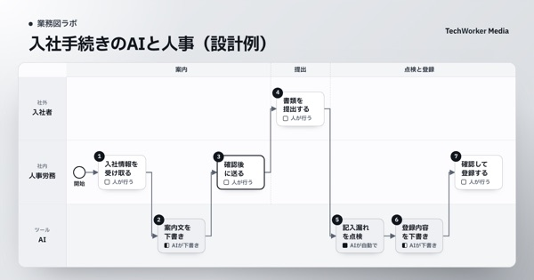
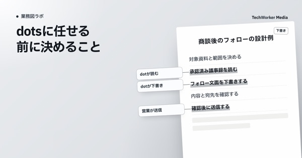
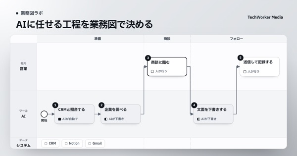

業務図で、AIに任せる仕事を決める。
部署の仕事を業務図にすると、誰が・どの順で・何をしているかが1枚で分かります。そのうえで、どの工程をAIに任せ、どこを人が判断するかを決めます。部署別の業務図の例、聞き取りで業務を洗い出す方法、AIの持ち場の決め方、業務図を古くしない運用を扱います。
記事一覧
すべて：13件

部署別の業務図
2026.10.27
見積のAI活用｜下書き・確認・送信を分ける業務図
電材・電線卸の見積業務を、デンミツAIの公開画面から読み解きます。品番・数量・単価を人へ戻す条件と、試行時に残す記録を設計例で示します。
業務責任者→

AIエージェントの事例
2026.10.20
会社の記憶をAIが毎晩整理する｜記録から事実を抜き、翌朝のAIに渡す業務図
TechWorkerでは、社内の決定・会話・案件の記録を、AIが毎晩2時に整理しています。事実を抜き出し、つながりを直して翌朝のAIに渡す流れと、人が直す所を紹介します。
情シス・AI導入担当→

AIエージェントの事例
2026.10.20
記事の公開をAIに任せる｜題材選びから表示の確認まで、審査で止める業務図
TechWorkerでは、自社メディアの記事を、AIが題材選びから公開まで平日に進めています。別の目で審査し、通った回だけ公開する流れと、代表が持つ所を紹介します。
業務責任者→

AIエージェントの事例
2026.10.20
新素材の用途探しにAIを使う｜案を広げ、3つの観点で絞る業務図
化学メーカーで、新素材の用途探しを生成AIの手法にした事例です。AIが用途の案を広げ、市場性・技術難易度・自社方針適合度で採点し、1時間で絞り込むまでの流れを紹介します。
業務責任者→

AIエージェントの事例
2026.10.20
AIの全社展開を部門ごとに計画する｜特性の整理から横展開までの業務図
建設企業で、経営層が掲げるAI活用を、部門ごとの導入計画に落としている事例です。業務の特性を整理し、ロードマップを作り、先に進めた部門のやり方を広げる流れを紹介します。
経営者・経営幹部→

AIエージェントの事例
2026.10.20
市場リサーチを社内で回す｜Deep Researchで調べ、判断は社員が持つ業務図
製薬企業のマーケティング部門で、外部コンサルに任せていた疾患・薬剤の市場リサーチを、社員が自分で回せるようにした事例です。Deep Researchで調べる手順と、社員が持つ判断を紹介します。
業務責任者→

AIエージェントの事例
2026.10.20
サイトの改善をAIが毎週1つ進める｜数字を読み、直して台帳に残す業務図
TechWorkerでは毎週月曜、スクリプトが自社サイトの数字を集め、AIが改善を1つ選んで直しています。数字を集める所と直す所の分け方と、台帳への残し方を紹介します。
業務責任者→

AIエージェントの事例
2026.10.20
AIの作業者に仕事を任せる｜指示書と合格の条件で点検する業務図
TechWorkerでは、責任者のAIが仕事を指示書にし、空いている作業者のAIに出しています。合格の条件で点検してから代表に束ねて報告する流れと、作業者がしないことを紹介します。
情シス・AI導入担当→

部署別の業務図
2026.10.12
月次締めのAI活用｜仕訳案・照合・資料作成を分ける業務図
月次締めでAIに任せる範囲は、作業ごとに決めます。公開済みの設計例から、経理責任者が下書き・登録・差異調査の担当を分ける手順を紹介します。
業務責任者→

部署別の業務図
2026.10.09
問い合わせ一次対応のAI活用｜定型回答と個別判断を分ける業務図
問い合わせのAI活用は、回答案を作る条件と、人へ渡す条件を先に決めます。公開済みの業務図を使い、対応責任者が試す範囲と確認者を決める手順を紹介します。
業務責任者→

部署別の業務図
2026.10.05
入社手続きのAI活用｜公開テンプレートで見る、人事が確定する3か所
入社手続きを7工程に分けた公開図から、送付・不備の確定・登録を人事に残す理由を解説します。個人情報を渡す前の条件も確認します。
人事・研修担当→

任せる工程の決め方
2026.10.03
OpenAIのdotsとは｜公式画面で見る仕事と、任せる範囲の決め方
公式の営業デモから、AIが作る資料と人が承認する約束を読み解きます。TechWorkerの商談業務図を使い、下書き・確認・送信を分けます。
業務責任者→

任せる工程の決め方
2026.10.02
AIに任せる業務の決め方｜商談業務図で読む、下書きと実行の境界
TechWorkerの公開済み商談画面から、AIの下書きと人の送信を分ける方法を解説します。工程ごとに、担当と「やらないこと」を決めます。
業務責任者→
このメディアには、選んだ読者向けの記事がまだありません。
ほかのメディアを見る
このメディアについて
「業務図ラボ」は、聞き取り・資料・業務の記録の3つからAIが部署の業務図を作るサービス「ギョウムズAI」を提供する株式会社TechWorkerが運営するメディアです。業務図を描くことを目的にせず、図をもとにAIに任せる仕事と人が判断する仕事を決めるための実務の知識をまとめています。
記事は、公的機関・製品の公式資料などの一次情報と、TechWorker自身の業務図をもとに書いています。